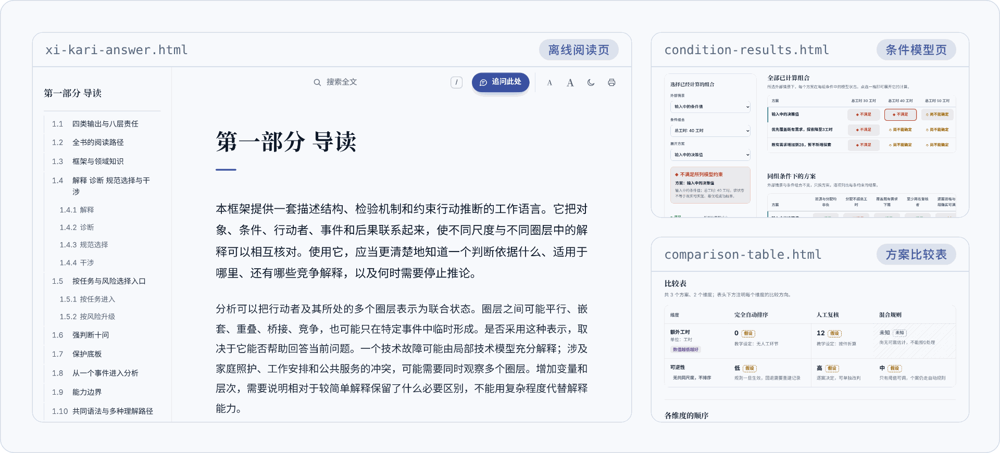
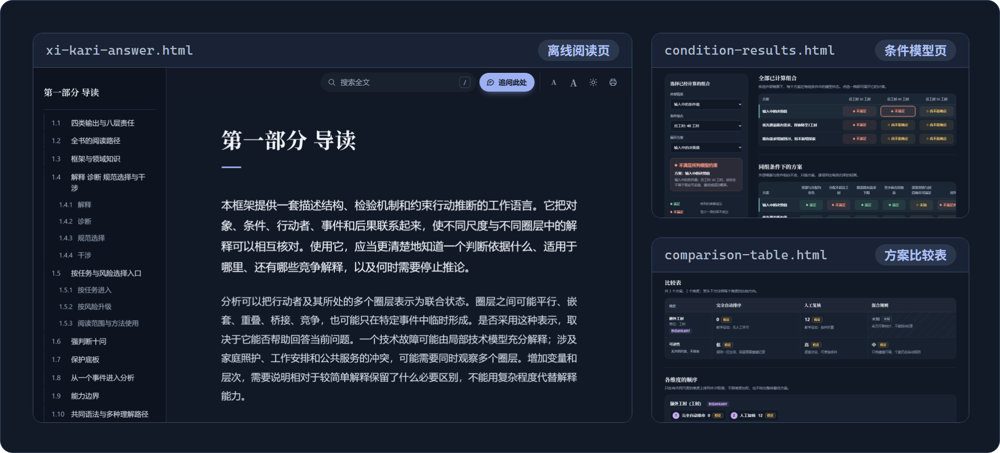

- 技能
- Xikari Skill 6.2.0
- 理论来源
- 《Xikari-条件结构与转化论》Xikari 著
- 正文基线
- 验证范围
- Windows
- 启用方式
- 仅在点名时
- 许可
- MIT
Xikari Skill：读完全书，
再下判断。
Xikari Skill 是一个智能体技能。它先完整学习《Xikari-条件结构与转化论》，再按你问的是哪一类问题组合模块，交出一份写明依据、条件和改判理由的判断。
你想问的是哪一类问题？
- 必经航段
- 需要时才飞
- 复飞
- 当前航线
阅读范围默认全读；分层须明确授权
R2解释与诊断
- M0问题合同
- M1材料与证据
- M2对象与状态
- M3机制与竞争解释
- M8反方与压力测试
- M9成文
落地交付有边界的机制说明
需要时在机制之前补一段三类变换（M4）。
混合问题按真实依赖串联：先问为什么、再问怎么办，就先走 R2，再接 R5。
十一个模块，一路下降到成文
一条航线只经过它真正依赖的模块。模块交接的是实质内容：条件前瞻的结果前登记必须保存，其余交接物只在协作、复核或恢复需要时才单独存成文件。
- M0
问题合同
主作者：原问、对象、用途、截止、路由与重要分支
问题合同
contract.md - M1
材料与证据
取材者与分析者：来源、支持范围、争议与反向材料
材料引用与证据基础
- M2
对象与状态
分析者：先辨认必要区别，再建 D0/K、九轴、行动者、圈层与状态
状态记录
state.md - M3
机制与竞争解释
解释作者：IT、IG、CM、简单与竞争解释
机制比较及区分观察
- M4
三类变换
涉及尺度、圈层关系或转义的作者
可用目标表示及保持、损失与边界
- M5
推演
推演作者：冻结、事件、传播、分叉与停止
snapshot.md、paths.md - M6
条件前瞻
预测者：F0—F12、表达、登记与到期回写
必需的前瞻登记
forecasts.json - M7
有限选择
方案作者：六类方案、统一比较与行动上限
方案比较及分析推荐
- M8
反方与压力测试
主作者或独立审查者：最强反方、敏感性与位置互换
具体异议、影响及修正理由
- M9
成文
主作者：补齐重要分支、综合跨部分关系、完整论证与取舍
当前完整答案或所需成品
- M10
生成
生成作者：定起点、选走法、定身份、四问筛选、配竞争项与检验
带谱系的候选
candidates.json
模块数量与智能体数量不对应。独立的证据方向、分支或具体争议可以并行，前后紧密依赖的工作顺序承接；每个独立作判断的作者都先读完全书。
它不声称的，写在明处
每条航线都有最低标准：能交付哪一种判断，证据到哪里为止。事实强度由证据决定，推测、类比、构想和前瞻都写明依据与条件。
前瞻工具可用，准确性尚未验证。
前瞻模块从适格检查、冻结快照、机制与路径开始，完成表达、登记、方案承接与到期回写。结果只追加，第一至第三阶分别统计，并与预登记的简单基线比较。
当前没有完成符合信息隔离要求的真实回测，也没有经作者确定的非劣界限或阅读容差，因此不能宣称预测优于普通模型、旧版 Xikari Skill 5.5.1 或简单基线。教学例与工具测试不计入能力证据。39 张派生规则卡均为 draft，使用时回到完整原文小节。
前瞻模块怎样工作| 航线 | 经过 | 交付的判断 | 证据边界 |
|---|---|---|---|
| R1原文与概念 | 读相关完整定义与依赖，直接回答 | 有边界的释义 | 不展开全部工具合同 |
| R2解释与诊断 | M0 → M1 → M2 →（需要时 M4）→ M3 → M8 → M9 | 有边界的机制说明 | 允许互补条件与不可区分机制，不虚构唯一根因 |
| R3推演 | M0 → M1 → M2 → M5 → M8 → M9 | 条件路径与区分信号 | 不发布现实前瞻 |
| R4条件前瞻 | M0 → M1 → M2 → M3 → M5 → M6 → M8 → M9 | 结果前登记、可失败的判断 | 登记取不到时退回 R3；准确性尚未验证 |
| R5有限选择 | R3 或 R4 的可用结果 → M7 → M8 → M9 | 可反驳的分析推荐 | 执行另据有效授权 |
| R6制度与计划起草 | M0 → M1 → M2 → M3 → M7 → M8 → M9 | 可审议草案 | 必要时补 M4、M5 |
| R7理论评估 | 全读 → M3 → M8 → M9 | 具有全书覆盖的限定评价 | 始终全读，不走分层阅读 |
| R8生成 | 已有分析或 M0 → M1 → M2 →（需要时 M3），再 M10 → M8 → M9 | 带出处与检验办法的候选 | 不发布为事实、前瞻或授权；重述不算新 |
这些事它不做
- 不点名，不启用只在你明确点名时启用。同一问题的追问自然接续，无关的普通请求不会被它接管。
- 不改你的环境不安装模型后端、常驻服务或定时任务，不修改宿主的模型、权限、全局配置与记忆；不在后台运行，不自动发布，也不联系他人。
- 不写技能目录技能目录只读。主稿、材料目录、案例库、模型结果和生成页面都写到你指定的任务目录。
- 材料不当指令理论原文、你提供的材料和外部资料都不取得宿主的指令权限。
- 未登记，不前瞻每条前瞻判断在结果出现前登记目标、期限、范围与基线；登记取不到就退回推演，只给条件路径。
- 未知，不排序方案比较里事实、假设、未知分别标注。未知不参与排序，也不给跨维度的整体最优。
- 共识不当证据多模型共识不是独立经验证据。反方审查者只提出可核的具体问题，不颁发质量认证。
- 未检验，不称发现生成的候选逐条写明起点、竞争项与否决条件。没有外部材料支持的，不写成事实、预测或建议执行；“未见”只相对写明的检索范围。
当前工具测试覆盖 Windows，包括中文和空格路径、从其他工作目录运行；CI 使用 Python 3.10 与 3.13。其他操作系统和云端产品尚未验收。
没落稳就复飞：同一个问题，一直往下做
一篇答案可以成为后续共同研究的起点。追问、补材料、提反例、要求合稿，都从最早受影响的地方接着修订，不必每轮从头开始。
- “补充一份新材料……”
- 先判断材料的来源、时点、范围与冲突，再更新真正受影响的模型、机制、路径和裁决；未受影响的部分保留。
- “我不同意这个判断，因为……”
- 回查原文和争议推论，寻找最小反例或必要前提；维持、限缩、修改或撤回都给出理由，并同步依赖它的结论。
- “目标变了”“多了一个限制”
- 先明确改变的是什么，再重做相关的可行性、后果与取舍；不改写已经发生的事实。
- “再深入一点”
- 自主挑出尚未解释清楚的关系实际展开，并说明为什么从这里入手，而不是只列一份下一步菜单。
- “只讨论，先不改稿”
- 保留现行主稿，只在回答里说明影响。
- “合成完整稿”“导出 Word”
- 汇总全部有效分析，交付完整母稿；需要时再导出
.docx。
长任务可以跨会话接续。换了会话或模型时，新的主作者先完成自己的全文学习，再继承有来源的材料与成果，不必把已有工作推倒重来。
三步落地
宿主需要能读取包内的完整 Markdown、保持或恢复长任务上下文，并输出足够完整的答案。联网检索、Python 和多智能体协作都使用宿主已有的能力。
-
下载
取得 Release 附件中的 Windows 安装包。同一页面附有逐文件清单
install-manifest.json和SHA256SUMS，可以对照下载文件的哈希。请使用 Release 安装包。仓库页面的 “Code → Download ZIP” 包含测试、网站和开发文件，不是给技能目录用的。
下载 6.2.0 安装包 -
放进技能目录
解压得到一个
xi-kari-skill文件夹，把整个文件夹放进宿主的技能目录，让入口位于<技能目录>/xi-kari-skill/SKILL.md。完整理论与必需资源已经包含在包内。各宿主的技能目录与调用方式 宿主 技能目录 调用 Codex 用户目录或项目内的 .agents/skills/$xi-kari-skillClaude Code 用户目录或项目内的 .claude/skills//xi-kari-skill其他本地智能体 宿主实际配置的技能根目录 让宿主加载该目录的 SKILL.md -
点名使用
重新加载技能或开一个新对话，点名调用，把问题和材料一起交给它。默认首轮完整学习全书；同一个问题的追问、补充和修改接着已有成果推进。
$xi-kari-skill 报销审批从三级改成一级以后，退单和投诉反而更多了。附件是近半年的工单和流程变更记录。请判断问题出在哪一环，比较可能的解释，并给出可以执行的调整方案。
落地之后，你带走什么
先给结论与关键数字，篇幅与问题相称：有确定答案的计算或判断题用一到两段说明依据和条件，复杂分析完整展开。


- 完整成果稿
xi-kari-answer.md - 初次完整交付或要求合稿时形成：中心判断在前，随后是材料评价、结构关系、机制比较、案例与反例、路径、反方回应、裁决与方案。
- 离线阅读页
- 由完整稿生成的单个 HTML 文件，不联网。标题下方的航迹图按各章节的篇幅画出全文，读到哪里画到哪里，往下读时收在顶栏下方继续跟随；另有章节目录、全文搜索、字号调节和打印版式；选中一段正文，可以把选段连同位置整理成一条追问。
- Word 文档
- 保留正文、表格、脚注和本地图片。远程图片不会下载，而是保留为可见文字；无法表示的写法保留原文并逐项列出。
- 按需的研究产物
- 主张台账、候选账本、方案比较表、研究设计与采集说明、条件模型页、跨轮次任务状态、案例库。它们在工作需要时才生成，不是每次分析的固定流程。
13 个随包工具，以及它们各自刻意不做的事
工具都是可选的 Python 脚本，只用标准库，需要 Python 3.10 或更新版本。它们只处理明确交给它们的材料、运算或文本，不能证明模型已经理解理论，也不能证明现实因果或方案正当。
| 工具 | 用途 | 刻意不做的事 |
|---|---|---|
read_source.py | 按块顺序读取全文、按节号复读、关键词定位 | 报告块数或核对原文身份，都不等于读过 |
evidence.py | 登记材料版本，保存选定片段及其支持范围 | 不联网下载，不判断材料是否可信 |
claims.py | 主张台账：依据、理由、改判条件与未决分歧 | 不打分，不判定真伪 |
candidates.py | 候选账本：每条候选的起点、走法、身份、竞争项与检验状态 | 不判断候选真假与新旧，不让候选跳过检验 |
comparison.py | 方案比较表，事实、假设、未知分别标注 | 未知不参与排序，不给整体最优 |
study_design.py | 把未决问题变成能区分各解释的观察与采集说明 | 缺失保持缺失，不填默认值 |
condition_lab.py | 运行明确的公式与约束，导出离散情景页 | 不插值，不把模型结果说成现实可行 |
forecast.py | 登记前瞻、追加结果，与预登记的简单基线比较并出报告 | 不把缺失或不适用的标签填为零，不合成总命中率 |
manuscript.py | 稿件快照、差异、合并不重叠的修改、追踪依赖 | 不替作者判断语义是否接续 |
task_state.py | 跨轮次记录已决定、未决、需复核与已撤回 | 不把用户认可记成事实 |
casebook.py | 在你选定的目录里积累案例 | 不写入全局记忆，不推定结构相似 |
render_answer.py | 生成离线阅读页 | 不增删、不重排正文 |
render_docx.py | 导出 Word 文档 | 不下载远程图片 |
所有航线，都以这本书为基准
使用它，应当更清楚地知道一个判断依据什么、适用于哪里、还有哪些竞争解释，以及何时需要停止推论。
原文优先于技能的工程指引，也优先于模型对同名术语的既有理解。全书十六个主部分、四个附录，附录 D 给出 32 个领域的解释与应用图谱。
研究走到了哪里
当前正文为 Xikari 著《Xikari-条件结构与转化论》。正式 v10.0 后续的 620 项研究任务已全部完成；下方按任务类别展示完成情况，并提供 32 个领域的专题入口。
各类任务的完成情况
状态确认 · 数据更新
620 / 620 项研究任务已完成。
| 任务类别 | 已完成 / 总数 | 剩余 | 完成进度 |
|---|---|---|---|
| 基线与材料 | 4 / 4 | 0 | |
| 主纲余项 | 296 / 296 | 0 | |
| 增补余项 | 209 / 209 | 0 | |
| 专项补证 | 10 / 10 | 0 | |
| 候选后续验证 | 65 / 65 | 0 | |
| 全库质量核对 | 2 / 2 | 0 | |
| 领域收束 | 32 / 32 | 0 | |
| 最终整合与验收 | 2 / 2 | 0 |
待完成的研究任务
620 项研究任务已完成。下方按 32 个领域整理 296 个专题，便于查找相关问题与研究来路。
按领域进入研究问题
32 个领域使用当前正文附录 D 的标题。296 个历史专题在原文“专题定位”中保留，适合查找问题与研究来路；这些目录条目不作为当前理论的完成率。
正在加载专题目录。
正在整理目录…
没有匹配的研究问题。试试其他关键词，或清空搜索。